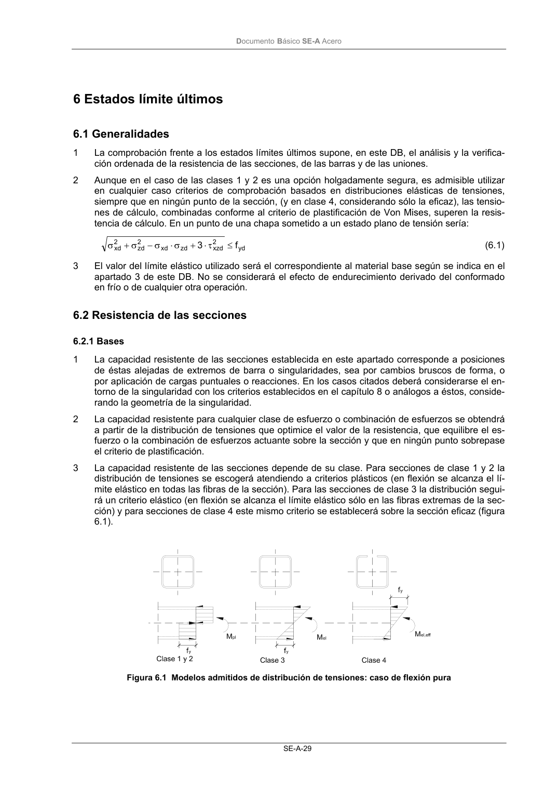

DB-SE-A · 5.5 Análisis plástico · versión 2007-10-23 · capa oficial
Formatos: JSON compacto · Markdown · PDF fuente
Ámbito del documento · texto del ámbito · documento y tablas
ID técnico a0053 · PDF pág. 30-31 · jerarquía no validada por persona · contrastado con el literal de la página 30 (candidato tipográfico); no validado por persona · padre: raíz
5.5 Análisis plástico 1 Cuando se emplee cualquier procedimiento de análisis plástico se asegurará el cumplimiento de las condiciones de ductilidad. 2 En el caso de análisis rígido-plástico de elementos estructurales constituidos por barras, lo anterior supone: c) asegurar la posición de las rótulas plásticas; d) comprobar que tales rótulas se producen en las secciones de las barras y que éstas son de clase 1; e) comprobar que las uniones aledañas a las secciones en las que se producen las rótulas son de resistencia total; f) comprobar el arriostramiento de las barras entre las rótulas. 6 En el caso de análisis de chapas en flexión transversal a su plano, lo anterior supone a) asegurar que la posición de las líneas de rotura se sitúa en la chapa en regiones con relacio- nes de anchura a espesor mayores de 10 b) comprobar que las uniones aledañas a las secciones en las que se producen las rótulas tie- nen resistencia superior a la requerida en el modelo de equilibrio en rotura, DocumentoBásico SE-A Acero SE-A-29

PDF fuente redistribuible: copia fiel enlazada en esta página (SHA256 verificado).